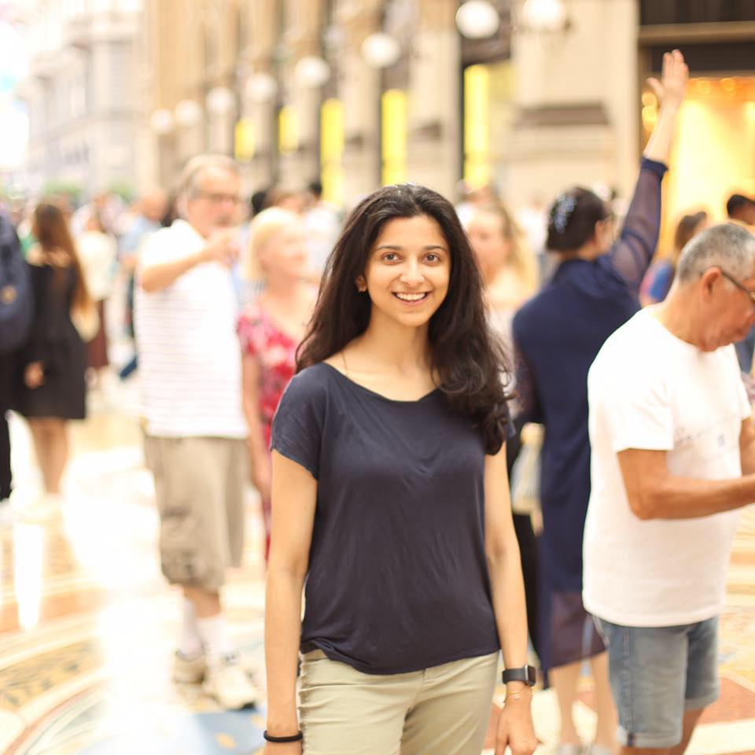

|  |
Ekta Prashnani Ph.D. Candidate (Computer Vision) University of California Santa Barbara, CA ekta at ece dot ucsb dot edu [GitHub] [Google Scholar] [CV] |
For my Ph.D. research, I work on designing robust deep-learning algorithms for subjective perceptual tasks such as perceptually-consistent image error prediction, video saliency prediction.
I find these problems particularly exciting because the subjective nature of these tasks and, in some cases, the difficulty in capturing sufficient training data poses an interesting challenge in terms of training with limited / noisy data.
I am also interested in the research problems around the topics of understanding and tuning the latent space of deep generative models, and image / video forensics.
A preprint of our recent work on noise-aware training for visual saliency prediction can be found on arXiv.
Our CVPR 2018 paper provides details of a perceptually consistent image error metric. The accompanying code, models, and datasets can be found at the GitHub repository.
My time in grad school is split between my own research and providing technical mentorship
(which I thoroughly enjoy!) to senior undergrads and even high-school students for their research in computer vision and machine learning.
I also enjoy running long distances,
painting and taking pictures.
News
| Jun, 2021: ECE Dissertation Fellowship by the Department of Electrical and Computer Engineering, UCSB, for Summer 2021. |
| Apr, 2021: A preprint of our work on noise-aware training strategies for visual saliency prediction (in particular, video saliency prediction) is now available on arXiv. |
| Jan, 2021: The PieAPP dataset is now available publicly! See here for details. |
| Jul, 2019: Started my internship at Nvidia Research, Learning and Perception Research team. |
| Jul, 2019: Secured a compute grant on Google Cloud Platform for our research on deep perceptual metrics for images and videos (through Google Cloud for Startups, Surge). |
| May, 2019: Outstanding Teaching Assistant award by the ECE department at UCSB. |
| Jun, 2018: Our CVPR2018 paper about a new perceptual image-error metric (PieAPPv0.1) and the associated source code and trained model is now available online! Also, more information can be found on the project webpage. |
| May, 2018: Outstanding Teaching Assistant award by the ECE department at UCSB. |
| Apr, 2018: Google travel grant for CVPR2018. |
| Feb, 2018: Our paper "PieAPP: Perceptual Image-Error Assessment through Pairwise Preference" is accepted to CVPR 2018.. Code, trained models, and paper coming online soon! |
| Feb, 2018: Our patent on Single Image Rectification (filed for the work I did during my internship at Ricoh Innovations) is granted! |
| Oct, 2017: AI Grant fellowship for developing a perceptually-consistent image error metric. |
Publications
E. Prashnani*, H. Cai*, Y. Mostofi and P. Sen, "PieAPP: Perceptual Image-Error
Assessment through Pairwise Preference," Computer Vision and Pattern Recognition, 2018.  |
| E. Prashnani, M. Moorkami, D. Vaquero and P. Sen, "A Phase-Based Approach for Animating Images Using Video Examples," Computer Graphics Forum, August 2016, Volume 36,
Issue 6.
|
| *joint first authors |
Teaching

|
Technical Mentorship for EE Capstone (2018-2019) Provided technical mentorship to seniors on their EE Capstone projects (total five capstone projects). I worked very closely with the capstone team (left to right in the top picture: Benjamin Hirt, Erik Rosten, Shan-Wei Sun) working on the design and deployment of machine-learning-based medical image recognition algorithms for arthroscopic images (sponsored by Arthrex). The team used an Nvidia Jetson TX2 interfaced with the live camera feed from an Arthrex surgical drawer, to deploy the trained deep-learning-based models. Check out a brief live demo here (starting at 25s). |

|
Technical Mentorship for EE Capstone (2017-2018) Provided technical mentorship to seniors on their EE Capstone projects (total five capstone projects). I worked very closely with the capstone team working on medical image recognition for arthroscopic images (sponsored by Arthrex). The team (left to right: Jonathan Huynh, Phanitta Chomsinsap, Jacob Kurtz and Alae Amara) was selected to present their work at the Engineering Design Expo, 2018, at UCSB. |
| Research Mentor for High School Students (July 2017) In the Summer of 2017, I had the opportunity to mentor four exceptional high school students (left to right in first picture: Sohini Kar, Jungwoo Park, Joshua Doolan, James Wang) as a part of the Summer Research Mentorship Program at UCSB. I spent the first few weeks of the program teaching relevant concepts of computer vision and machine learning to these students (they followed along easily - the age for brilliance keeps getting younger!). The students spent the latter half of the program working on the research tasks I designed for them in applying deep learning to object detection (for Sohini and Jungwoo) and image restoration (for Joshua and James). |

|
Technical Mentorship for EE Capstone (2016-2017) Provided technical mentorship to seniors on their EE Capstone projects (total six capstone projects). I worked very closely with the capstone team working on deep-learning-based image super-resolution (sponsored by Flir). The team (left to right: Julian Castro, Connor Northend, Jose Jimenez) ended up winning the award for the Best Technical Capstone Project! |